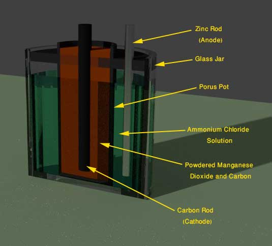
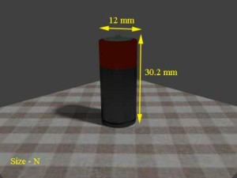
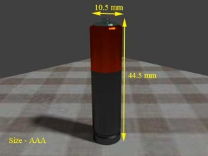
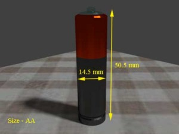
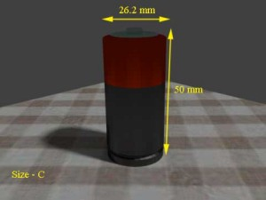
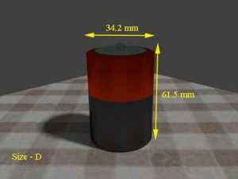
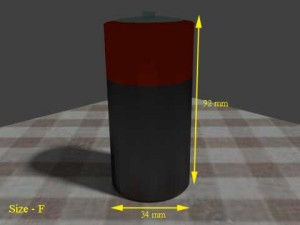
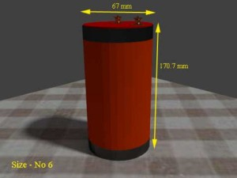

• Chemical Reaction
• Voltage Rating
• Energy Density
• Types
• Advantages and Disadvantages
Zinc Carbon Battery
Zinc carbon battery is being popularly used during last 100 years. There are two types of zinc carbon battery generally available – Leclanche battery and Zinc chloride battery . Both of these are primary battery . This battery was invented by Goerge Lionel Leclanche in 1866. This was the first battery in which low corrosive electrolyte like ammonium chloride was used. Before that only strong mineral acids were used as electrolyte of battery system.
In this battery cell, one glass jar was used as main container. The container was filled with ammonium chloride solution as electrolyte. An amalgamated zinc rod was immersed in this electrolyte as negative electrode or anode. In this Leclanche battery cell, a porous pot was filled with one to one mixture of manganese dioxide and carbon powder. A carbon rod was inserted into this mixture. The porous pot along with the mixture and carbon rod served as positive electrode or cathode and this was placed in the ammonium chloride solution in the jar.In 1876, Leclanche himself improved his own prototype design of zinc carbon battery . Here he mixed a resin gum binder with manganese dioxide and carbon powder to form a compressed solid block of the mixture by hydraulic pressure. Due to this solid structure of cathode mixture, there is no further need of porous pot in Leclanche battery cell. In 1888, Dr. Carl Gassner, further developed the construction of Leclanche cell. Here he used a paste of plaster of Paris and ammonium chloride as electrolyte, instead of liquid ammonium chloride. Instead of inserting a zinc rod inside the electrolyte in glass container, he made the container by zinc itself. Hence this container also serves as anode of the battery . He minimized local chemical action in his battery by wrapping zinc chloride – ammonium chloride saturated cloths to the cylindrical cathode mix block. Later he replaced plaster of Paris by wheat flour, in electrolyte mixture. This was the first commercial design of dry zinc carbon battery cell.
This was not the end of journey. The Leclanche battery was further developed to meet its ongoing market demand in 20 th century. Later acetylene black carbon was used as cathode current collector. This is more conductive than graphite. Development has also been done in separator design and venting seal system.
 After 1960, more effort was directed in development of zinc chloride battery cell. This is also a popular version of zinc carbon battery . Here, zinc chloride is used as electrolyte instead of ammonium chloride. This was developed to provide better performance in the heavy drain application. In other words, zinc chloride battery is improved substitute of Leclanche’ battery in heavy drain applications.
Chemical Reaction in Zinc Carbon Battery
In Leclanche battery cell, zinc is used as anode, manganese dioxide is used as cathode and ammonium chloride is used as main electrolyte but there is some percentage of zinc chloride in the electrolyte. In zinc chloride battery cell, zinc is used as anode, manganese dioxide is used as cathode and zinc chloride is used as electrolyte.
In both of the zinc carbon battery , during discharge, zinc anode involves in oxidation reaction and each zinc atom involved in this reaction releases two electrons.
These electrons come to the cathode through external load circuit.
In Leclanche battery cell ammonium chloride (NH 4Cl) exists in electrolyte mixture as NH 4+ and Cl -. In cathode MnO2 will be reduced to Mn2O3 in reaction with ammonium ion (NH 4+). In addition to Mn2O3 this reaction also produces ammonia (NH3) and water (H20).
But during this chemical process some of ammonium ions (NH 4+ ) are directly reduced by electrons and form gaseous ammonia(NH3) and hydrogen(H2).

In zinc carbon battery this ammonia gas further reacts with zinc chloride (ZnCl2) to form solid zinc ammonium chloride and gaseous hydrogen reacts with manganese dioxide to form solid di-manganese trioxide and water. These two reactions prevent formation of gas pressure during discharging of battery .
Overall reaction is,
A zinc chloride battery is improvement version of zinc carbon battery . These battery are generally labelled as heavy duty battery . A zinc chloride cell contains only zinc chloride (ZnCl2) paste as electrolyte. This battery provides more current, more voltage and more life than a general purpose zinc carbon battery . The cathode reaction is,
Overall reaction is,
Voltage Rating of Zinc Carbon Battery
Standard voltage rating of a zinc carbon battery is determined by type of anode and cathode materials used in the battery cell. In zinc carbon battery cell, zinc is anode material and manganese dioxide is cathode material. Electrode potential of zinc is – 0.7 volt whereas electrode potential of manganese dioxide is 1.28.
Therefore, theoretical voltage of each cell should be – ( - 0.76) + 1.23 = 1.99 V but considering many practical conditions, the actual voltage output of a standard zinc carbon battery is not more than 1.5 V.
Energy Density of Zinc Carbon Battery Cell
The molar weight of cathode material manganese dioxide is 87 g/mol. Here in the reaction of battery it is found that two electrons reduce two manganese dioxide molecules. Hence, as per Faraday’s constant 28.6 Ah can be delivered by complete reduction of one mole or 87 g of manganese dioxide. Therefore, 87/26.8 = 3.24 g manganese dioxide is required to deliver 1 Ah electricity.
The molar weight of anode material zinc 65 g/mol. Here in the reaction of battery it is found that two electrons oxidize one zinc atom. Hence, as per Faraday’s constant 28.6 Ah can be delivered by complete oxidation of one mole or 65/2 g or 32.5 g of zinc. Therefore, 32.5/26.8 = 1.21 g of zinc is required to deliver 1 Ah electricity.
Total energy density of zinc carbon battery is 3.24 g/Ah + 1.21 g/Ah = 4.45 g/Ah =1 / 4.45 Ah/g = 0.224 Ah/g or 224 Ah/Kg. This is absolutely theoretical calculation, but in practice many other materials like, electrolyte, carbon black, water to be included in the battery , weight of which cannot be omitted. In addition to these many other practical conditions to be considered in a battery . Considering everything in account, a practical low discharge Leclanche’ battery cell have energy density of 75 Ah/Kg and same for heavy duty and intermittent discharge battery , is about 35 Ah/Kg.
Types of Zinc Carbon Battery
As we said earlier, there are two types of zinc carbon battery .
Again Leclanche’ battery are of main two types, general purpose cells and heavy duty cells.
In general purpose low cost Leclanche’ battery , pure zinc is used as anode, ammonium chloride is used as main electrolyte along with a percentage of zinc chloride. Here natural manganese dioxide ore is used as cathode material. These battery are generally used where cost is more vital factor than their performance.
Application of heavy duty Leclanche’ battery is dominated by zinc chloride battery but still some the manufacturers continue to produce heavy duty Leclanche’ battery by adding electrolytic or chemical manganese dioxide along with manganese dioxide ore as the cathode.
In general purpose zinc chloride battery , pure zinc is used as anode; zinc chloride is used as electrolyte. Sometime a small quantity of ammonium chloride is added to the electrolyte. Here also natural manganese dioxide ore is used as cathode material.
For Industrial heavy duty applications, electrolytic manganese dioxide is added to natural ore manganese dioxide in cathode. These battery are in cost competition with heavy duty Leclanche’ battery . This battery has low leakage, compared to Leclanche’ cell.
In extra or super heavy duty zinc chloride cell very small quantity ammonium chloride is added to zinc chloride electrolyte. The quantity of zinc chloride must be less than 1% of its cathode weight. The ore manganese oxide is replaced by electrolyte manganese oxide in cathode materials. These cells use paper separator coated with cross linked or modified starches, which enhance their stability in the electrolyte. Extra or super heavy duty zinc chloride battery is used where high performance is required even at the cost of high expenditure. It performs well in low temperature, which is not possible with Leclanche’ cell.
Types of Zinc Carbon Batteries according to Size
| Size | Weight | Diameter | Height | |
|---|---|---|---|---|
| N | 6.2 gram | 12 mm | 30.2 mm |  |
| AAA | 8.5 gram | 10.5 mm | 44.5 mm |  |
| AA | 15 gram | 14.5 mm | 50.5 mm |  |
| C | 41 gram | 26.2 mm | 50 mm |  |
| D | 90 gram | 34.2 mm | 61.5 mm |  |
| F | 160 gram | 34 mm | 92 mm |  |
| No - 6 | 900 gram | 67 mm | 170 mm |  |
Advantages and Disadvantages of Zinc Carbon Battery
The advantages of Zinc carbon battery can be listed as below.
Advantages of Leclanche’ Battery
- The cost of this battery cell is quite low.
- Various shapes, sizes and capacities of these cells are easily available.
- Long traditional reliability.
Disadvantages of Leclanche’ Battery
- Its energy density is quite low.
- It gives poor service in low temperature.
- It has poor leakage resistance.
- Cannot perform efficiently at high current drain application.
- Self life is not very good.
- Its voltage falls steadily with discharge.
Advantages of Zinc Chloride Battery
- Higher energy density is available in zinc chloride battery .
- Zinc chloride battery has high efficiency under heavy discharge condition.
- It has better low temperature performance.
- Smaller leakage resistance.
Disadvantages of Zinc Carbon Battery
- Gassing rate of this battery is higher.
- This is more oxygen sensitive.
 by
by